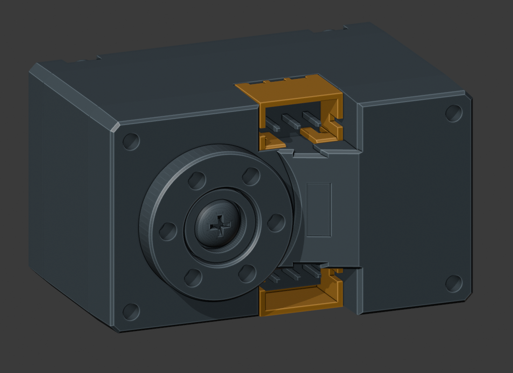
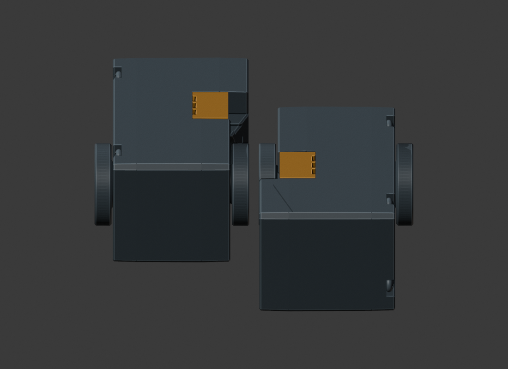
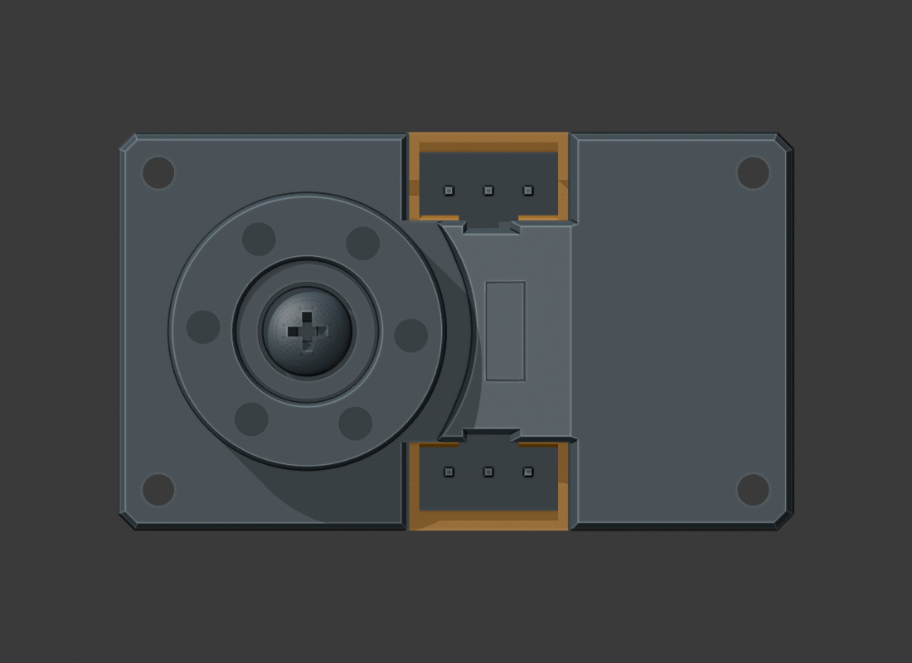

2026-10-13 · 对照 M1.58 · 只读检查，尚未替换主模型
插口朝内值得继续；不能把它当作完整线束已放下。
原厂详细外形未与现有硬质支架相交，四处软垫有约 0.073 mm 局部压入，需试配。四个插口前的轴向空间约 8.3 mm，仍要核对真实插头和导线弯折。


| 插口方向 | 硬质结构 | 其余限制 |
|---|---|---|
| 左右均朝内 | 闭合参考实体与现有硬件/打印件未检出相交 | 软垫接触不计为硬质结构通过；每处约 4.056 mm³ 重叠，实际压缩仍 NOT_TESTED |
| 任一台朝外 | 该侧与 Drive_Bridge 约 587.5 mm³ 相交，另有螺母/输出螺钉冲突 | 当前轴线、孔位和支架不变时，舍弃此方向 |
原厂 CAD 两输出端安装平面相距 26.2 mm，旧图纸名义总长为 26 mm。保持外侧法兰在 X=±27 mm，原厂 CAD 的内侧端面相距至少 1.6 mm（包围盒给出的距离下界）。该数值不包含变形、公差与实物批次差异。
使用 6.6 × 3.2 mm 的抽象矩形探针，从原厂插座最外面再向外偏移 0.05 mm 开始，沿插入/拔出轴连续形成实体。这个截面是容量样本，不是选定插头的外形，也没有预留最终装配间隙。二分检查得到下表：
| 插口 | 无相交长度与首次相交上界 | 限制件 |
|---|---|---|
| L / 下 | 8.298～8.303 mm | 对侧电机 |
| L / 上 | 8.298～8.303 mm | 对侧电机 |
| R / 下 | 8.298～8.303 mm | 对侧电机 |
| R / 上 | 8.298～8.303 mm | 对侧电机 |
这只约束塑壳直出空间；尚未检查真实压接端子、拔插手指、三根导线的弯折、固定点及 U03/U04 同时存在。没有生成下料长度或供应商裁线图。

前后身体壳、车轮/外隔套、共用底盖及其螺钉先卸下，并断开真实电机线；电机连同金属轴、两只轴承、内隔套和原输出螺钉向下取出。每侧 0～60 mm、每 1 mm 检查一次，共 122 个位置，未出现超过项目原有 0.01 mm³ 阈值的刚性相交。
原位轴承与座各有约 0.000022 mm³ 的数值接触，原样保留在报告中。初始顶部软垫接触另列 NOT_TESTED；这不是带线装配、人手操作或连续全过程证明。
来源是样品项目 2026-10-09 归档的宇树官方模型包，STEP 与压缩包中 S288 成员逐字节一致。单位 mm，缩放 1。原文件包含 14 个曲面壳：6 个正向闭壳、6 个内边界闭壳、2 个开放圆柱面；展示全部原表面，干涉计算使用闭合部分并扣除内边界，未静默补洞。
原厂 STEP （原研究引用，未收录于本快照） · CAD 检查 · 姿态/干涉结果 · 空间/拆出结果 · 实际运行命令 · 文件保护结果
主模型、20 个已导出 STL、参数与视频保持；硬件对话期间更新的 12 个文件通过独立接收记录追踪，未重写旧基线。当前 UPS-R2 新载板仍未有原生 PCB 布局；本检查不宣布新载板或全线束合格。
原 STEP SHA256：6857b4a8a753a473ff0e1172aeb74e464bb3d3ca694625fcbfababd5e621952a47f3e83da47a9c3a49dc785395a660fe65d138a2148423f6e9625a8602507d54